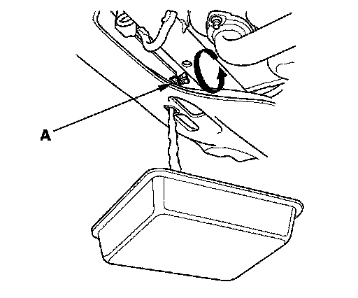

Coolant: Service and Repair
Coolant Replacement1. Start the engine. Set the heater temperature control dial to maximum heat, then turn off the ignition switch. Make sure the engine and radiator are cool to the touch.
2. Remove the radiator cap.
3. Remove the splash shield.
4. Loosen the drain plug (A), and drain the coolant.

5. Install a rubber hose (A) on the drain bolt (B) located at the rear of the engine block, then loosen the drain bolt.
6. When the coolant stops draining, tighten the drain bolt. Remove the rubber hose.
7. Tighten the radiator drain plug securely.
8. Install the splash shield.
9. Remove, drain, and reinstall the coolant reservoir.
10. Fill the coolant reservoir to the MAX mark (A) with Acura Long Life Antifreeze/Coolant Type 2 (P/N OL999-9001).
11. Pour Acura Long Life Antifreeze/Coolant Type 2 into the radiator up to the base of the filler neck.
NOTE:
^ Always use Acura Long Life Antifreeze/Coolant Type 2 (P/N OL999-9001). Using a non-Acura coolant can result in corrosion, causing the cooling system to malfunction or fail.
^ Acura Long Life Antifreeze/Coolant Type 2 is a mixture of 50% antifreeze and 50% water. Do not add water.

12. Loosely install the radiator cap.
13. Start the engine, and let it run until it warms up (the radiator fan comes on at least twice).
14. If the maintenance minder required to replace the engine coolant, reset the maintenance minder, and this procedure is complete. If the maintenance minder did not require to replace the engine coolant, go to step 13.
15. Connect the Honda Diagnostic System (HDS) to the data link connector (DLC).
16. Turn the ignition switch ON (II).
17. Make sure the HDS communicates with the vehicle and the powertrain control module (PCM). If it doesn't communicate, troubleshoot the DLC circuit.
18. Select BODY ELECTRICAL with the HDS.
19. Select ADJUSTMENT in the GAUGES MENU with the HDS.
20. Select RESET in the MAINTENANCE MINDER with the HDS.
21. Select MAINTENANCE SUB ITEM 5 RESET with the HDS.
22. Turn off the engine. Check the level in the radiator, and add Acura Long Life Antifreeze/Coolant Type 2, if needed.
23. Put the radiator cap on tightly, then run the engine again, and check for leaks.
24. Clean up any spilled engine coolant.
25. Reset the multi-information display.